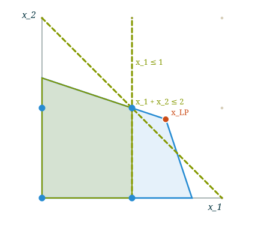
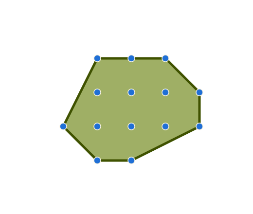
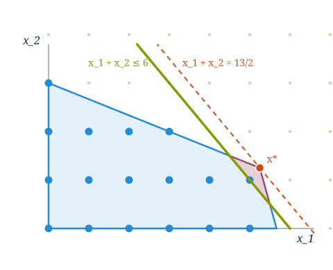
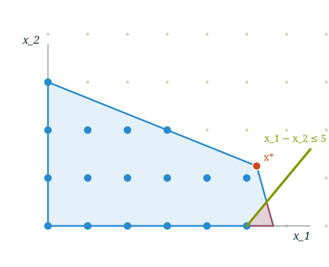
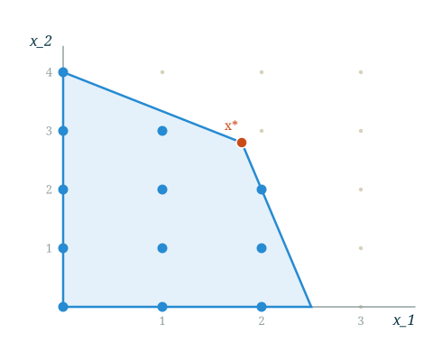
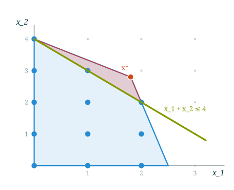
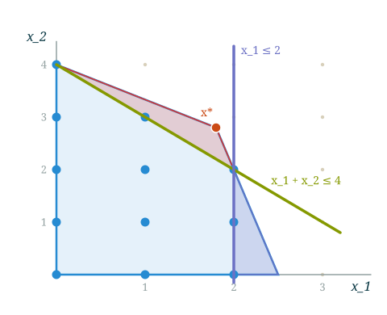
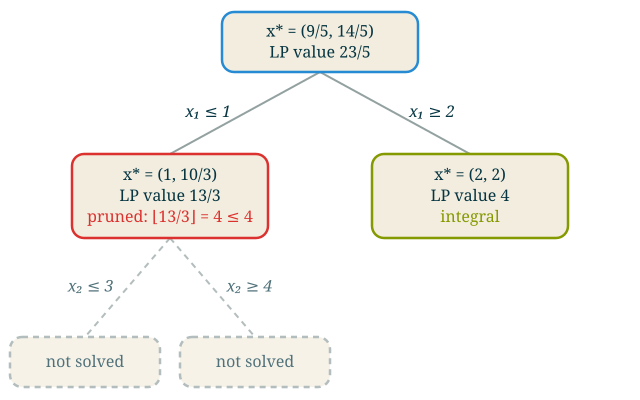
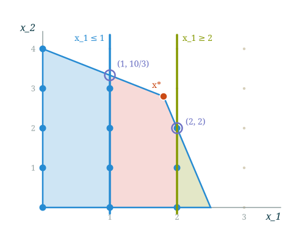

Introduction to Optimization
CO 250
Lecture 20
PDF version of these slides (demo: this PDF version is experimental and may contain errors or differ from the slides)
Lecture Outline
- Review: Cutting Planes and the Convex Hull
- Cutting Plane Algorithms
- Branch and Bound
- Convex Functions
Review: Cutting Planes and the Convex Hull
Review: Integer Programs
An integer linear program has the form \[ \max \{c^{\intercal}x : Ax \le b,\ x \in \Z^n\}. \]
Its linear programming relaxation replaces $\Z^n$ with $\R^n$. Every integer feasible point is feasible for the relaxation, so the LP optimum is an upper bound on the IP optimum.
But the LP optimum is often fractional, and integer programs are much harder to solve than their relaxations.
Review: Cutting Planes
A valid cutting plane for the integer program is an inequality \[ f^{\intercal}x \le v \] that holds for every integer feasible point $x$.
Such an inequality can cut off part of the LP relaxation without removing any integer point, tightening the relaxation.
Example of Cutting Planes: The Floor Construction
If $f$ is an integer vector and $v^*$ is the optimal value of the linear program \[ \begin{aligned} \max \qquad & f^{\intercal}x \\ \text{s.t.} \qquad & Ax \le b, \end{aligned} \] then \[ f^{\intercal}x \le \lfloor v^* \rfloor \] is a valid cutting plane for the integer program.
Reason: every feasible $x$ has $f^{\intercal}x \le v^*$; if $x$ is also integer and $f$ is integer, then $f^{\intercal}x$ is an integer, so $f^{\intercal}x \le \lfloor v^* \rfloor$.
Review: Example
For the integer program \[\begin{aligned} \max \qquad & x_1 + x_2\\ \text{s.t.} \qquad & 3x_1 + x_2 \le 5,\quad x_1 + 3x_2 \le 4\\ & x_1, x_2 \ge 0,\quad x_1, x_2 \in \Z, \end{aligned} \] the LP relaxation gives $x_{LP} = \left(\tfrac{11}{8}, \tfrac{7}{8}\right)$ with value $\tfrac94 = 2.25$.
Since $x_1 + x_2$ is an integer, we may add $x_1 + x_2 \le 2$. The LP optimum moves to $\left(\tfrac32, \tfrac12\right)$, still fractional.
Optimizing $x_1$ gives $\tfrac53$, so we add $x_1 \le 1$, and $x^* = (1, 1)$ becomes an integral LP optimum.

Review: The Convex Hull
Let $C = \{x \in \Z^n : Ax \le b\}$ be the integer feasible points. The convex hull of $C$ is \[ \conv(C) = \{x \in \R^n : f^{\intercal}x \le v \text{ for every valid cutting plane}\}. \]

Review: Convex Hull Facts
Convex Hull Facts (stated without proof)
- $\conv(C)$ is the smallest convex set containing $C$.
- For any $c \in \R^n$, \[ \max \{c^{\intercal}x : x \in \conv(C)\} = \max \{c^{\intercal}x : x \in C\}. \]
- If $C = \{x \in \Z^n : Ax \le b\}$, then $\conv(C)$ is a polytope.
Review: Why This Matters
Together, the facts say that any integer linear program can be solved as a linear program: optimize the same objective over $\conv(C)$.
The catch: $\conv(C)$ may need an enormous number of inequalities, and we are not given them in advance.
This motivates building up the description one cut at a time — the subject of this lecture.
Cutting Plane Algorithms
Cutting Plane Algorithms
Look at the integer program \[ \begin{aligned} \max\qquad & c^{\intercal}x\\ \text{s.t.}\qquad & Ax \le b\\ & x \in \mathbb{Z}^n. \end{aligned} \]
The linear programming relaxation always has a larger optimal value than the integer program (because its feasible region is larger).
Adding a cutting plane can decrease this optimal value and makes it closer to the the integer program.

= 0 over the integer lattice, with LP optimum x* = (21/4, 5/4) in orange and a dashed orange line x1 + x2 = 13/2 through it. The green cut x1 + x2 <= 6 slices off the red corner containing x*, lowering the LP optimal value from 13/2 to 6." />$\max\ x_1 + x_2$: LP value $\tfrac{13}{2} \to 6$
Cutting Plane Algorithms
If the cutting plane still allows the optimal LP solution, then it does not immediately help improve the bound on the IP.

$x^*$ still feasible: no progress

$x^*$ removed: the relaxation tightens
Cutting Plane Algorithms
This suggests a refinement: a cutting plane for the LP optimal solution $x^*$ is one that removes $x^*$ from the LP relaxation. That is, we want \[ f^{\intercal}x \le v \] for every $x$ feasible for the IP, but also \[ f^{\intercal}x^* > v. \]
Cutting Plane Algorithms
Consider the integer program \[\begin{aligned} \max \qquad & x_1 + x_2\\ \text{s.t.} \qquad & 2x_1 + 3x_2 \le 12\\ & 4x_1 + x_2 \le 10\\ & x_1, x_2 \ge 0,\quad x_1, x_2 \in \Z. \end{aligned} \]
The LP relaxation has optimal solution \[ x^* = \left(\tfrac{9}{5}, \tfrac{14}{5}\right), \qquad x_1^* + x_2^* = \tfrac{23}{5}. \]

Cutting Plane Algorithms
The LP relaxation has optimal solution \[ x^* = \left(\tfrac{9}{5}, \tfrac{14}{5}\right), \qquad x_1^* + x_2^* = \tfrac{23}{5}. \]
Both of the following inequalities are cutting planes for the IP, but only one is a cutting plane for $x^*$. Which one?
$x_1 + x_2 \le 4$
$x_1 \le 2$
$x_1 + x_2 \le 4$ is because $x_1^* + x_2^* > 4$, so $x^*$ is cut out by the cutting plane.


Cutting Plane Algorithms
We can get the cutting planes for the previous slide by manipulating the LP: \[\begin{aligned} \max \qquad & x_1 + x_2\\ \text{s.t.} \qquad & 2x_1 + 3x_2 \le 12\\ & 4x_1 + x_2 \le 10\\ & x_1, x_2 \ge 0,\quad x_1, x_2 \in \Z. \end{aligned} \]
\[\begin{aligned} \tfrac{3}{10}(2x_1 + 3x_2) + \tfrac{1}{10}(4x_1 + x_2) &\le \tfrac{3}{10}(12) + \tfrac{1}{10}(10)\\ x_1 + x_2 &\le \tfrac{23}{5}\\ \end{aligned}\]
If the left side is integer, then we actually get $x_1 + x_2 \le 4,$ a cutting plane
Cutting Plane Algorithms
We can get the cutting planes for the previous slide by manipulating the LP: \[\begin{aligned} \max \qquad & x_1 + x_2\\ \text{s.t.} \qquad & 2x_1 + 3x_2 \le 12\\ & 4x_1 + x_2 \le 10\\ & x_1, x_2 \ge 0,\quad x_1, x_2 \in \Z. \end{aligned} \]
\[\begin{aligned} \tfrac{1}{4}(4x_1 + x_2) + \tfrac{1}{4}(-x_2) &\le \tfrac{1}{4}(10) + \tfrac{1}{4}(0)\\ x_1 &\le \tfrac{5}{2}\\ \end{aligned}\]
We get therefore that any integer point actually satisfies $x_1 \le 2$.
Cutting Plane Algorithms
How can we find cutting planes for an IP without having to solve many LPs? We can start by putting the IP into SEF.
If we have an IP of the form \[ \begin{aligned} \max\qquad & c^{\intercal}x\\ \text{s.t.}\qquad & Ax \le b, & x \in \mathbb{Z}^n, \end{aligned} \] where $A$ and $b$ both have integer entries, then we can put this IP into standard equality form \[ \begin{aligned} \max\qquad & c^{\intercal}(x^+ - x^-)\\ \text{s.t.}\qquad & A(x^+ - x^-) + s = b\\ & x^+, x^-, s \ge 0 \\ & x^+,x^-,s \in \mathbb{Z}^n. \end{aligned} \]
If $A$ and $b$ have rational entries, then we can clear denominators to get integer entried data. If the data is irrational, then there is no real way to proceed.
Cutting Plane Algorithms
For an integer program in SEF, \[ \begin{aligned} \max\qquad & c^{\intercal}x\\ \text{s.t.}\qquad & Ax = b,\\ & x \ge 0,\\ & x \in \mathbb{Z}^n, \end{aligned} \] we can solve the LP relaxation by the simplex method. This gives an optimal basis $B$ and the canonical form of the system.
Cutting Plane Algorithms
The integer program in SEF: \[\begin{aligned} \max \qquad & x_1 + x_2\\ \text{s.t.} \qquad & 2x_1 + 3x_2 + x_3 = 12\\ & 4x_1 + x_2 + x_4 = 10\\ & x_1, x_2, x_3, x_4 \ge 0\\ & x_1, x_2, x_3, x_4 \in \Z \end{aligned} \]
Canonical form for the optimal basis $B = \{1, 2\}$: \[\begin{aligned} \max \qquad & \tfrac{23}{5} - \tfrac{3}{10}x_3 - \tfrac{1}{10}x_4\\ \text{s.t.} \qquad & x_1 - \tfrac{1}{10}x_3 + \tfrac{3}{10}x_4 = \tfrac{9}{5}\\ & x_2 + \tfrac{2}{5}x_3 - \tfrac{1}{5}x_4 = \tfrac{14}{5}\\ & x_1, x_2, x_3, x_4 \ge 0 \end{aligned} \] What is the basic feasible solution?$x = (9/5,14/5,0,0)$.
Cutting Plane Algorithms
Take the $x_2$ row of the canonical form: \[ x_2 + \tfrac{2}{5}x_3 - \tfrac{1}{5}x_4 = \tfrac{14}{5}. \]
Since each $x_i$ is nonnegative, we can decrease the coefficients on the left side and turn this equation into an inequality \[ x_2 + \lfloor\tfrac{2}{5}\rfloor x_3 + \lfloor -\tfrac{1}{5}\rfloor x_4 \le \tfrac{14}{5}. \] The left side is now integral, so we can apply our floor trick
The following is a valid cutting plane: \[ x_2 - x_4 \le \lfloor \tfrac{14}{5} \rfloor = 2. \]
This is a cutting plane for $x^*$, since $x^*_2 - x^*_4 = \frac{14}{5} > 2$.
Cutting Plane Algorithms
In general, suppose that we have an IP in SEF, and that we have put it in canonical form with respect to the optimal LP basis.
Each row $i$ of the canonical form expresses one basic variable in terms of the nonbasic ones $N$: \[ x_{B(i)} + \sum_{j \in N} \bar{a}_{ij}\, x_j = \bar{b}_i. \] At the LP optimum every nonbasic $x_j = 0$, so $x_{B(i)} = \bar{b}_i$.
Cutting Plane Algorithms
Write $\lfloor t \rfloor$ for the floor of $t$. Round each coefficient down: \[ x_{B(i)} + \sum_{j \in N} \lfloor \bar{a}_{ij} \rfloor\, x_j \;\le\; x_{B(i)} + \sum_{j \in N} \bar{a}_{ij}\, x_j = \bar{b}_i, \] using $x_j \ge 0$.
The left side is an integer for every integer feasible $x$, so \[ x_{B(i)} + \sum_{j \in N} \lfloor \bar{a}_{ij} \rfloor\, x_j \;\le\; \lfloor \bar{b}_i \rfloor. \]
Cutting Plane Algorithms
Cutting plane from a canonical form row
From a canonical-form row with right-hand side $\bar{b}_i$, \[ x_{B(i)} + \sum_{j \in N} \lfloor \bar{a}_{ij} \rfloor\, x_j \;\le\; \lfloor \bar{b}_i \rfloor \] is valid for every integer feasible point.
If $\bar{b}_i \notin \Z$, then the LP optimum has every nonbasic $x_j = 0$ and $x_{B(i)} = \bar{b}_i$, giving left side $\bar{b}_i > \lfloor \bar{b}_i \rfloor$. So this is a cutting plane for $x^*$.
Cutting Plane Algorithms
The integer program in SEF: \[\begin{aligned} \max \qquad & 2x_1 + 3x_2 + x_3 + 2x_4\\ \text{s.t.} \qquad & 2x_1 + x_2 + x_3 + 3x_4 = 7\\ & x_1 + 3x_2 + 2x_3 + x_4 = 8\\ & x_1, x_2, x_3, x_4 \ge 0\\ & x_1, x_2, x_3, x_4 \in \Z \end{aligned} \]
Canonical form for the optimal basis $B = \{1, 2\}$: \[\begin{aligned} \max \qquad & \tfrac{53}{5} - \tfrac{6}{5}x_3 - \tfrac{3}{5}x_4\\ \text{s.t.} \qquad & x_1 + \tfrac{1}{5}x_3 + \tfrac{8}{5}x_4 = \tfrac{13}{5}\\ & x_2 + \tfrac{3}{5}x_3 - \tfrac{1}{5}x_4 = \tfrac{9}{5}\\ & x_1, x_2, x_3, x_4 \ge 0 \end{aligned} \]
Cutting Plane Algorithms
The LP optimum is $x^* = \left(\tfrac{13}{5}, \tfrac{9}{5}, 0, 0\right)$. Take the $x_1$ row of the canonical form: \[ x_1 + \tfrac{1}{5}x_3 + \tfrac{8}{5}x_4 = \tfrac{13}{5}. \]
\[\begin{aligned} x_1 + \left\lfloor \tfrac{1}{5} \right\rfloor x_3 + \left\lfloor \tfrac{8}{5} \right\rfloor x_4 &\le \left\lfloor \tfrac{13}{5} \right\rfloor\\ x_1 + x_4 &\le 2 \end{aligned}\]
$x_1^* + x_4^* = \tfrac{13}{5} > 2$: a cutting plane for $x^*$.
Adding the Cut in SEF
To get a better LP relaxation, we'd like to also include the cutting plane we just found to the formulation. One snag: the inequality we just got was an inequality, so doesn't fit into SEF.
To keep the program in standard equality form we introduce one new slack variable $x_{n+1} \ge 0$, and just include it in this one constraint: \[ x_{B(i)} + \sum_{j \in N} \lfloor \bar{a}_{ij} \rfloor\, x_j \;+\; x_{n+1} \;=\; \lfloor \bar{b}_i \rfloor, \qquad x_{n+1} \ge 0. \]
We append this as a new row and $x_{n+1}$ as a new column (with objective coefficient $0$). The system stays in the form \[ \max\{ c^{\intercal}x : A'x' = b',\ x' \ge 0,\ x' \in \Z^{n+1}\}. \]
Adding the Cut in SEF
The integer program in SEF: \[\begin{aligned} \max \qquad & 2x_1 + 2x_2 + 3x_3 + 2x_4\\ \text{s.t.} \qquad & x_1 + 2x_2 + 4x_3 + 2x_4 = 10\\ & 3x_1 + 2x_2 + 4x_3 + 3x_4 = 12\\ & x_1, x_2, x_3, x_4 \ge 0\\ & x_1, x_2, x_3, x_4 \in \Z \end{aligned} \]
Canonical form for the optimal basis $B = \{1, 2\}$, with $x^* = \left(1, \tfrac{9}{2}, 0, 0\right)$: \[\begin{aligned} \max \qquad & 11 - x_3 - \tfrac{1}{2}x_4\\ \text{s.t.} \qquad & x_1 + \tfrac{1}{2}x_4 = 1\\ & x_2 + 2x_3 + \tfrac{3}{4}x_4 = \tfrac{9}{2}\\ & x_1, x_2, x_3, x_4 \ge 0 \end{aligned} \]
Adding the Cut in SEF
The $x_2$ row gives a cutting plane for $x^*$: \[\begin{aligned} x_2 + \lfloor 2 \rfloor x_3 + \left\lfloor \tfrac{3}{4} \right\rfloor x_4 &\le \left\lfloor \tfrac{9}{2} \right\rfloor\\ x_2 + 2x_3 &\le 4 \end{aligned}\]
Adding it with a new slack variable $x_5$ keeps the program in SEF: \[\begin{aligned} \max \qquad & 2x_1 + 2x_2 + 3x_3 + 2x_4\\ \text{s.t.} \qquad & x_1 + 2x_2 + 4x_3 + 2x_4 = 10\\ & 3x_1 + 2x_2 + 4x_3 + 3x_4 = 12\\ & x_2 + 2x_3 + x_5 = 4\\ & x_1, x_2, x_3, x_4, x_5 \ge 0\\ & x_1, x_2, x_3, x_4, x_5 \in \Z \end{aligned} \]
Adding the Cut in SEF
Canonical form of the new program for its optimal basis $B = \{1, 2, 4\}$: \[\begin{aligned} \max \qquad & \tfrac{32}{3} - x_3 - \tfrac{2}{3}x_5\\ \text{s.t.} \qquad & x_1 + \tfrac{2}{3}x_5 = \tfrac{2}{3}\\ & x_2 + 2x_3 + x_5 = 4\\ & x_4 - \tfrac{4}{3}x_5 = \tfrac{2}{3}\\ & x_1, x_2, x_3, x_4, x_5 \ge 0 \end{aligned} \]
The new LP optimum is $x^* = \left(\tfrac{2}{3}, 4, 0, \tfrac{2}{3}, 0\right)$, and the LP value has dropped from $11$ to $\tfrac{32}{3}$.
Adding the Cut in SEF
The $x_4$ row of the new canonical form gives a second cutting plane: \[\begin{aligned} x_4 + \left\lfloor -\tfrac{4}{3} \right\rfloor x_5 &\le \left\lfloor \tfrac{2}{3} \right\rfloor\\ x_4 - 2x_5 &\le 0 \end{aligned}\]
$x_4^* - 2x_5^* = \tfrac{2}{3} > 0$: a cutting plane for the new $x^*$. It uses the new variable $x_5$, so it was not available from the original canonical form.
Adding it with a slack variable $x_6$, the LP optimum becomes \[ x^* = (0, 3, 0, 2, 1, 0) \] with value $10$. This is integral, so $(0, 3, 0, 2)$ is optimal for the integer program.
Branch and Bound
Branch and Bound
Cutting plane algorithms are inherently sequential: each new cut depends on the LP optimum found after adding the previous one.
We often want to parallelize work across many computers, but it is difficult to do so with cutting planes.
Idea: split the integer program into two smaller integer programs that can be solved independently.
Branch and Bound
Let $f$ be an integer vector and let $v \notin \Z$. If $x$ is an integer point, then $f^{\intercal}x$ is an integer, so \[ f^{\intercal}x \le \lfloor v \rfloor \qquad \text{or} \qquad f^{\intercal}x \ge \lceil v \rceil. \]
So any plane splits the integer program into two parts: \[\begin{aligned} & \max \{c^{\intercal}x : Ax \le b,\ f^{\intercal}x \le \lfloor v \rfloor,\ x \in \Z^n\},\\ & \max \{c^{\intercal}x : Ax \le b,\ f^{\intercal}x \ge \lceil v \rceil,\ x \in \Z^n\}. \end{aligned}\]
Every integer feasible point is feasible for exactly one part, so the optimal value of the integer program is the larger of the two optimal values.
Branch and Bound
The two parts can be given to different computers, and each part can be split again in the same way.
A natural choice of plane: if the LP optimum $x^*$ has $x_i^* \notin \Z$, split on \[ x_i \le \lfloor x_i^* \rfloor \qquad \text{or} \qquad x_i \ge \lceil x_i^* \rceil. \]
Then $x^*$ is not feasible for the LP relaxation of either part.
Branch and Bound
Splitting again and again gives a branch and bound tree: each node is an integer program, and its two children are its two parts.
We do not have to expand out every branch of this tree: some branches can be pruned using the LP relaxation.
If the LP relaxation at a node is infeasible, or its optimal value is no better than an integer solution we have already found, then nothing below that node can do better.

= 2, has integral LP optimum (2, 2) with value 4. Its left child, x1 <= 1, has LP optimum (1, 10/3) with value 13/3, and is pruned because the floor of 13/3 is 4, no better than the integer solution found. The left child's own children, x2 <= 3 and x2 >= 4, are drawn dashed and are never solved." />Branch and Bound
For the integer program \[\begin{aligned} \max \qquad & x_1 + x_2\\ \text{s.t.} \qquad & 2x_1 + 3x_2 \le 12\\ & 4x_1 + x_2 \le 10\\ & x_1, x_2 \ge 0,\quad x_1, x_2 \in \Z, \end{aligned} \] $x^* = \left(\tfrac{9}{5}, \tfrac{14}{5}\right)$, so split on $x_1 \le 1$ or $x_1 \ge 2$.
The LP optima of the two parts are $\left(1, \tfrac{10}{3}\right)$ with value $\tfrac{13}{3}$ and $(2, 2)$ with value $4$.
$(2, 2)$ is integral, and integer points in the first part have value at most $\left\lfloor \tfrac{13}{3} \right\rfloor = 4$, so $(2, 2)$ is optimal. Using such bounds to discard parts is the "bound" in branch and bound.

= 2 is shaded green with LP optimum (2, 2) circled; the strip between them, shaded red, contains the old LP optimum x* = (9/5, 14/5) and no integer points." />Convex Functions
Convex Functions
Definition
A function $f : \R^n \to \R$ is convex if for all $x, y \in \R^n$ and all $\lambda \in [0, 1]$, \[ f(\lambda x + (1 - \lambda) y) \le \lambda f(x) + (1 - \lambda) f(y). \]
Geometrically: the line segment joining any two points on the graph of $f$ lies on or above the graph.

Convex Functions
Examples of convex functions:
- Affine functions $f(x) = c^{\intercal}x + d$ (the objective of every LP).
- $f(x) = x^2$, $f(x) = |x|$ and $f(x) = e^x$ on $\R$.
- The squared length $f(x) = \|x\|^2 = x_1^2 + \dots + x_n^2$ on $\R^n$.
- Sums of convex functions, and maximums of convex functions such as $f(x) = \max\{a_1^{\intercal}x + b_1, \dots, a_m^{\intercal}x + b_m\}$.
Not convex: $f(x) = x^3$ and $f(x) = \sin x$ on $\R$.
Convex Functions
An application: fitting a line to data. Given data points $(a_1, b_1), \dots, (a_m, b_m)$ with $a_i \in \R^n$ and $b_i \in \R$, we look for $x \in \R^n$ so that $a_i^{\intercal}x \approx b_i$ for every $i$.
The least squares problem chooses $x$ by minimizing a convex function: \[ \min_{x \in \R^n} \ \sum_{i=1}^m \left(a_i^{\intercal}x - b_i\right)^2. \]
Why convexity helps: every local minimum of a convex function is a global minimum.